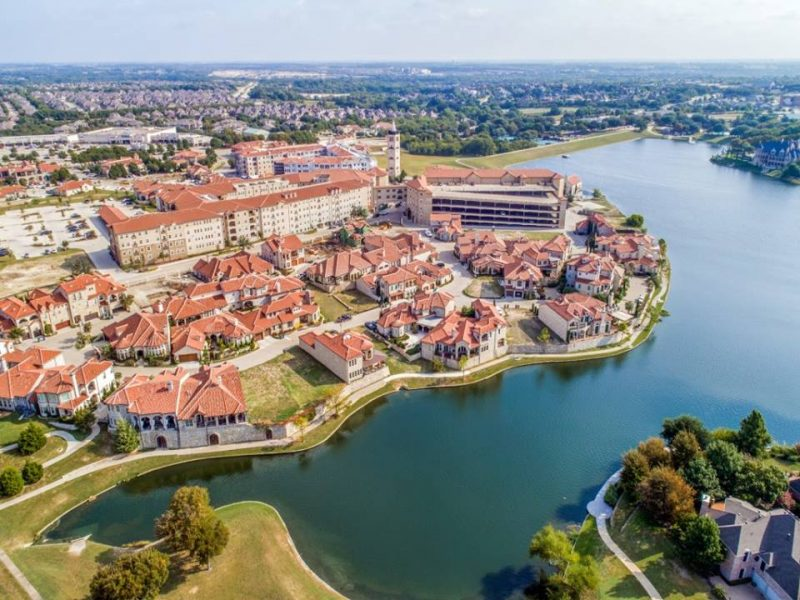

I grew up in Chicago, but moved to Bloomington when I got a job with XX. There is a neighborhood in McKinney that is very popular with photographers, known as Adriatica. It has a unique mediterranian village look to it. I will add a photo of the area as well as a youtube video about life in McKinney in case you are interested.

I actually visited London in March of 2020, but due to covid turning the world upside down the trip wasn't as productive as it could have been. I also added Paris, which I was supposed to go to in March of 2020, but was unable to due to Covid travel restrictions which would have prevented me from returning to the US as scheduled. I added Tokyo, because it would be an interesting place to visit.
My Favorites